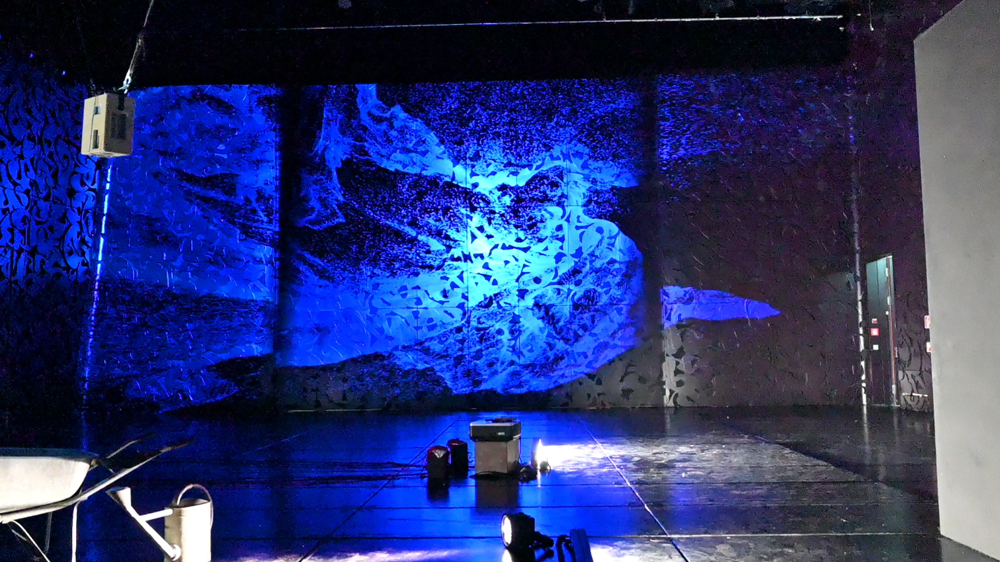
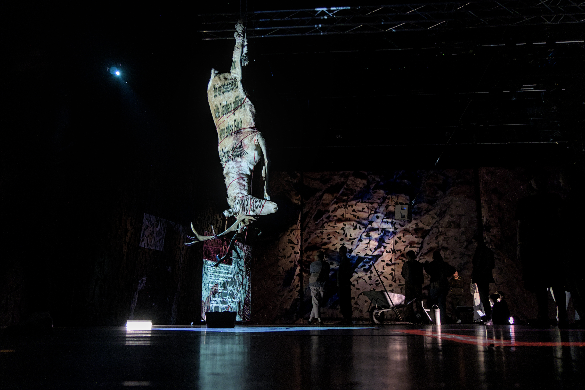
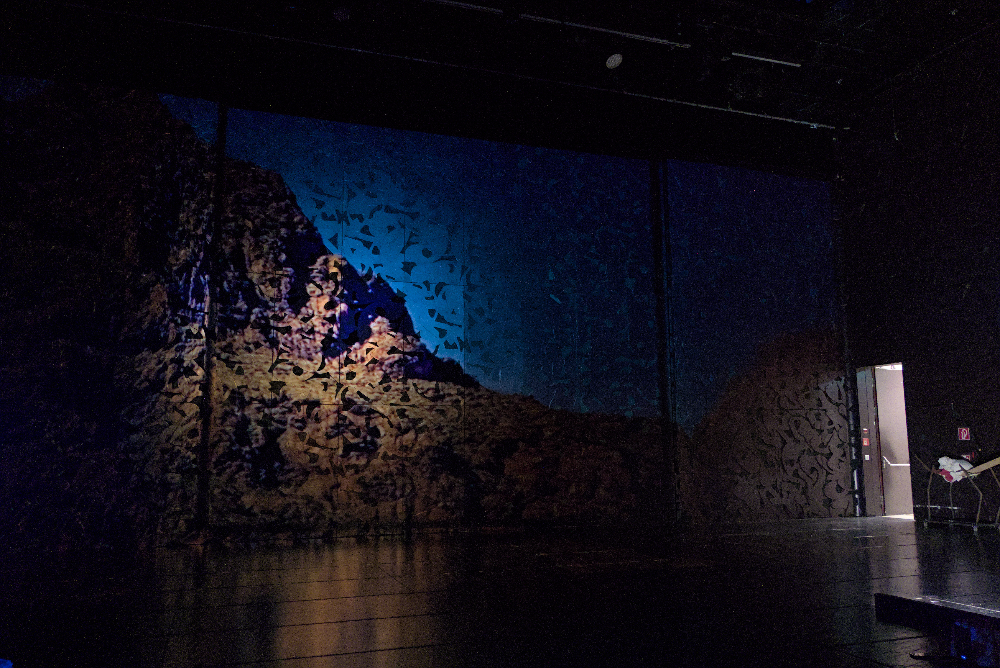

ONE YEAR THIRTY SECONDS [2025] is a projection mapping installation that situates human existence within the vast temporal scale of the Earth. If the planet's 4.5-billion-year history was compressed into a single year, the average human lifespan would amount to just 30 seconds. Developed specifically for the architecture of the Ligeti Hall of the MUMUTH, the installation engages with the spatial and material conditions of the site. The projection surface, has textured and light-absorbing qualities and produces zones of intensity and fading, allowing images to emerge and dissolve across the space. This instability becomes part of the piece. The installation unfolds as a layered visual environment in which personal recordings of Morocco’s Atlas mountains intersect with digitally generated erosive landscapes and granular textures and artificial fluid simulations. Together, these elements form a primary visual layer in constant transformation, evoking processes of water, erosion, and destruction, as well as traces of human presence: human existence appears marginal, inviting a reconsideration of our responsibility toward a planet that endures far beyond us.




Photos: Lea Sonnek & Carmen Pomet ©